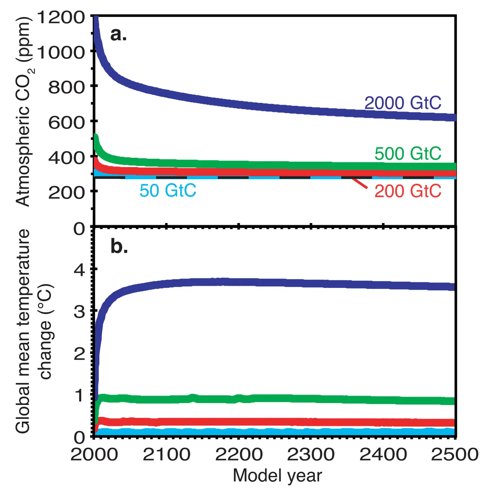

Stabilizing climate requires near-zero emissions
Key finding. A single pulse of carbon released to the atmosphere raises globally averaged surface temperature by an amount that remains approximately constant for several centuries even with no further emissions, so holding climate constant at a given global temperature requires near-zero future carbon emissions.

What question did this research address?
International climate policy has long been framed around stabilizing the *concentration* of greenhouse gases in the atmosphere. That framing carries an implicit assumption worth testing directly, namely that stabilizing concentrations would stabilize temperature.
This paper asked what emissions would actually be required to hold global temperature constant over the next several centuries.
What did we find?
Using an Earth system model of intermediate complexity, the study first established that the warming caused by a pulse of carbon does not decay away on a human timescale. It stays approximately constant for centuries after the pulse.
That persistence follows from an near-cancellation. Atmospheric CO2 does decline after a pulse, which would cool the planet, but the ocean continues to take up heat and the climate continues to approach equilibrium, which warms it. The two effects roughly offset.
The consequence is that temperature stabilization requires eliminating emissions rather than reducing them. Any positive rate of emission continues to add warming, so a constant temperature demands a near-zero emission rate.
It follows that future anthropogenic emissions commit the climate system to warming that is essentially irreversible on centennial timescales.
Why does it matter?
This result reframes the mitigation target. Under a concentration-stabilization framing, a low but non-zero level of continuing emissions looks like a stable endpoint; under this result it is a policy of continued warming, only slower.
Together with the finding that the warming per unit of emission is largely insensitive to the background scenario, it supplies the physical basis for the carbon budget — the idea that cumulative emissions, rather than the emission rate in any given year, set the eventual temperature.
Citation
H. Damon Matthews and Ken Caldeira (2008). Stabilizing climate requires near-zero emissions. Geophysical Research Letters 35.